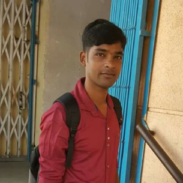
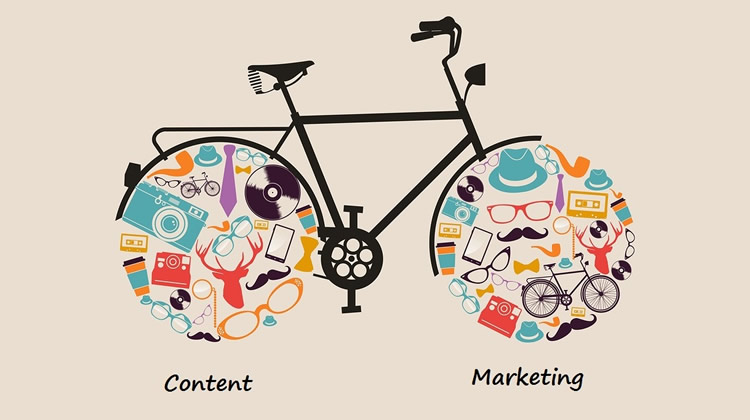

This is a socail media paragraph
Nilenso Hi I am Mintu Keyot! I am running in early morning in Bangalore. I would like to new words learns and more speaking and reading story books. Bicycling in the morning and I would like to dance and play guiter and most like to play football. I have been working at Nilenso Software LLP, since 2015 janaury, Post of Operation staff at nilenso Software LLP. So I am going to write small stories about our India.
Cycling
